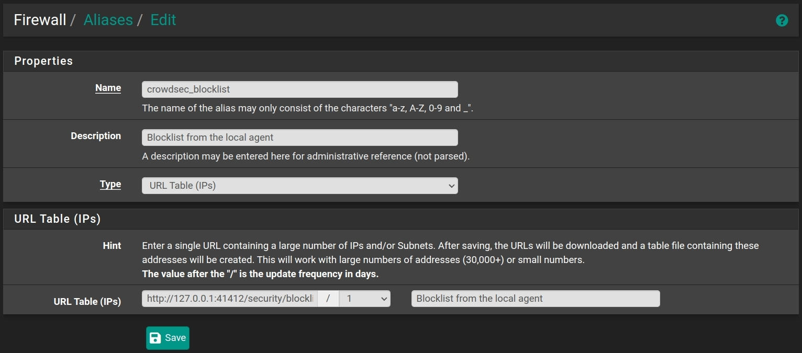

Protect pfSense from bad actors/IPs using CrowdSec.
This is how to install CrowdSec on pfSense running freeBSD 12.3.
To learn more about what is CrowdSec you can look at this YouTube video from Lawrence Systems or look at the video from CrowdSec.
You can find this blog post on Reddit and discuss about it.
How to install
You will need to check the freeBSD version on your pfSense home page. Then open the package summary on freshports in a new browser tab.
Upgrade your setup
If you already did follow my blog post once and want to upgrade crowdsec,
then do: pkg del crowdsec and follow the next step below.
Add pkg
pkg add https://pkg.freebsd.org/FreeBSD:12:amd64/latest/All/crowdsec-1.4.3.pkg
Follow the post install instructions.
You should adjust /usr/local/etc/crowdsec/acquis.yaml and remove non valid files.
For systems running /var on tmpfs
To see what running /var on tmpfs is about: screenshot
You will need to change data_dir and db_path in /usr/local/etc/crowdsec/config.yaml.
Set the folder to /usr/local/crowdsec/data/ and create it: mkdir -p /usr/local/crowdsec/data/
Start the services
service crowdsec start
Make it start at boot
Add to /etc/rc.conf.local:
crowdsec_enable="yes"
And create a file /usr/local/etc/rc.d/crowdsec.sh with contents:
service crowdsec start
Make it executable: chmod +x /usr/local/etc/rc.d/crowdsec.sh.
Reference: pfSense documentation on boot scripts
Look at your logs
tail -f /var/log/crowdsec*
(You can logout/login to make cscli work withour the full path needed.) Find where the CLI is located:
find / -name cscli
Enrol the instance using cscli.
/usr/local/bin/cscli console enroll xxxxxxxxxxxxxxxxxx
See the enrolled instance
Add scenarios
Example:
cscli scenarios list
cscli scenarios list -a
cscli scenarios install crowdsecurity/postfix-spam
cscli scenarios install crowdsecurity/dovecot-spam
Use the blocklist mirror service
Reference: official install docs and crowdsec blog.
Source code: GitHub
Uninstall the manual method previously provided by my blog
service crowdsec_blocklist_mirror stop
rm /usr/local/etc/rc.d/crowdsec_blocklist_mirror
rm /usr/local/etc/crowdsec/bouncers/crowdsec-blocklist-mirror.yaml
rm /usr/local/bin/crowdsec-blocklist-mirror
cscli bouncers list
cscli bouncers remove crowdsec-blocklist-mirror-REPLACE_ME
# Remove the blocklist enable line in /etc/rc.conf.local
# Remove the service line in /usr/local/etc/rc.d/crowdsec.sh
Install the service
You will need to check the freeBSD version on your pfSense home page. Then open the package summary on freshports in a new browser tab.
Add pkg
pkg add https://pkg.freebsd.org/FreeBSD:12:amd64/latest/All/crowdsec-blocklist-mirror-0.0.1.pkg
Follow the post install instructions.
Make then start at boot
Add to /etc/rc.conf.local:
crowdsec_mirror_enable="yes"
Add to the file /usr/local/etc/rc.d/crowdsec.sh:
service crowdsec_mirror start
Start the services
service crowdsec_mirror start
Check that it works
If there is no IPs, run: service crowdsec restart and re-try.
curl http://127.0.0.1:41412/security/blocklist
Add a firewall alias
Go to: Firewall > Aliases > URLs and click on + Add.
The type is: URL Table (IPs).
Do like on the screenshot using the URL we tried earlier and the save.

Add a firewall rule
Go to: Firewall > Rules > Interface name for Internet and click on Add.
The source is Single host and alias and the type the name of the firewall aslias you created earlier.
Do like on the screenshot and save. Then apply the changes.
Or use the firewall bouncer (does it work on pfSense ?)
This is an alternative to using the blocklist mirror service. I could not figure out how to know that it actually works.
Add pkg
You will need to check the freeBSD version on your pfSense home page. Then open the package summary on freshports in a new browser tab.
pkg add https://pkg.freebsd.org/FreeBSD:12:amd64/latest/All/crowdsec-firewall-bouncer-0.0.23.r2_6.pkg
Follow the post install instructions.
Make then start at boot
Add to /etc/rc.conf.local:
crowdsec_firewall_enable="yes"
Start the services
service crowdsec_firewall start
Add to the file /usr/local/etc/rc.d/crowdsec.sh:
service crowdsec_firewall start